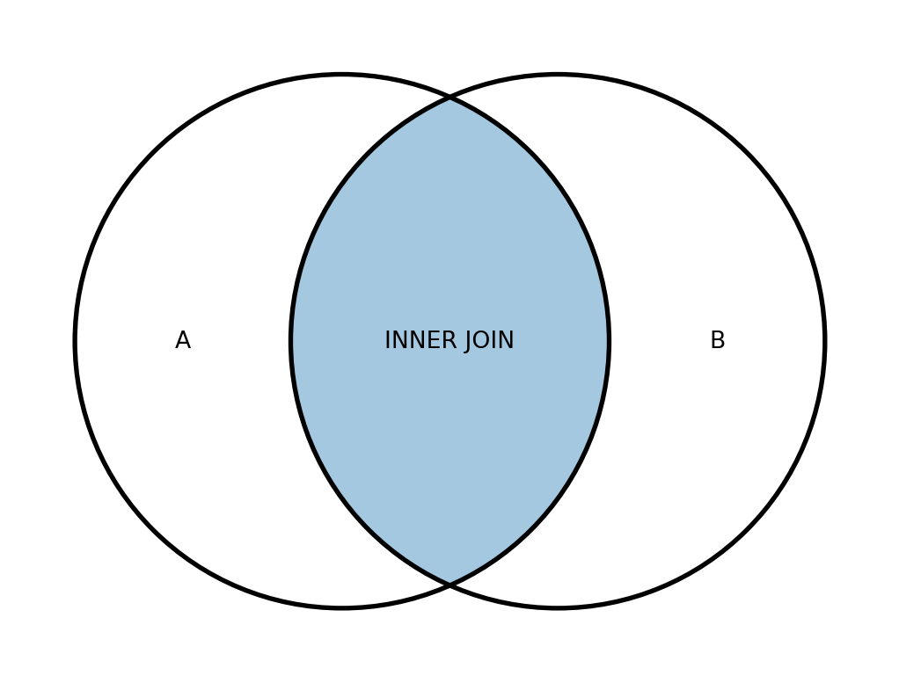
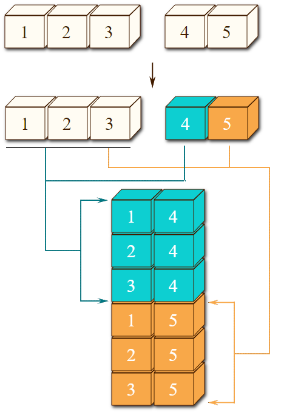
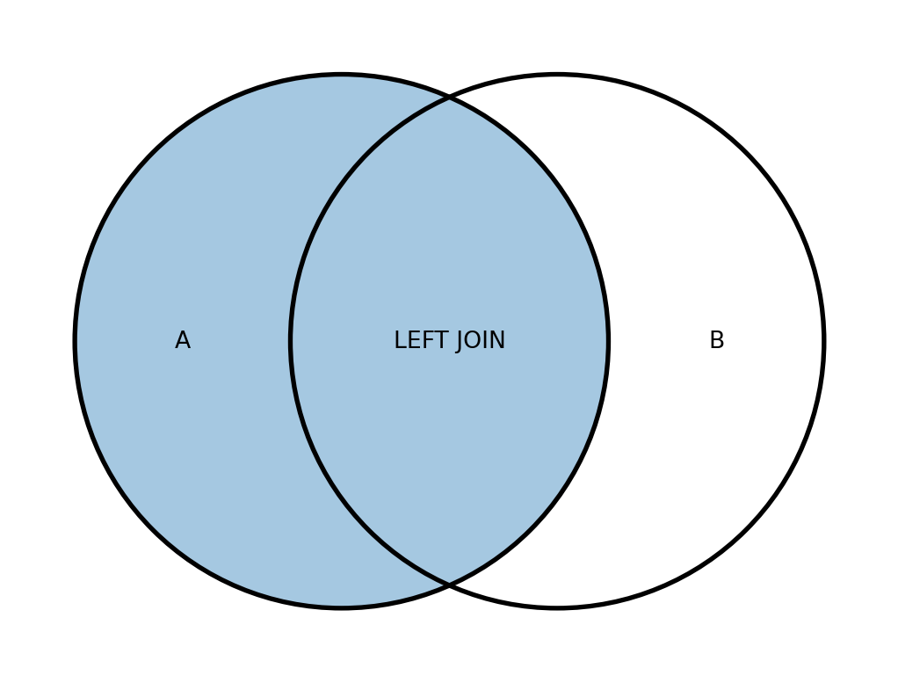
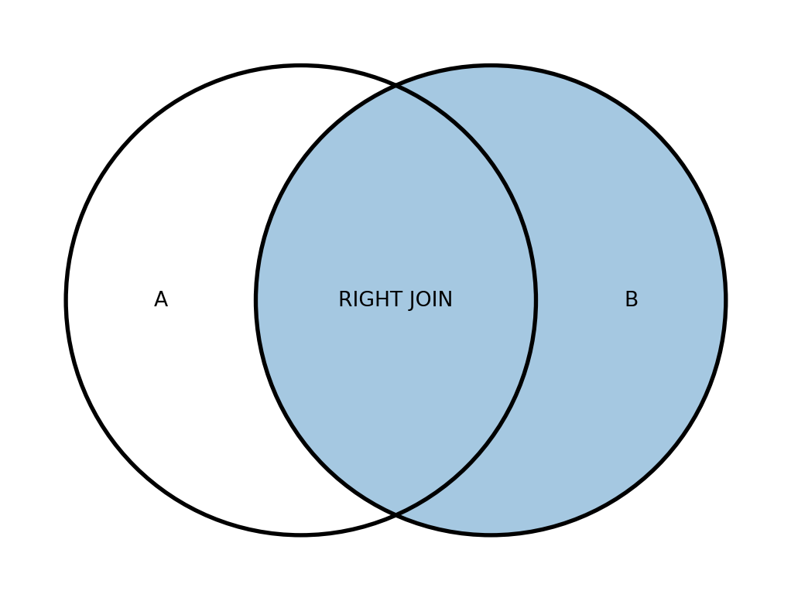
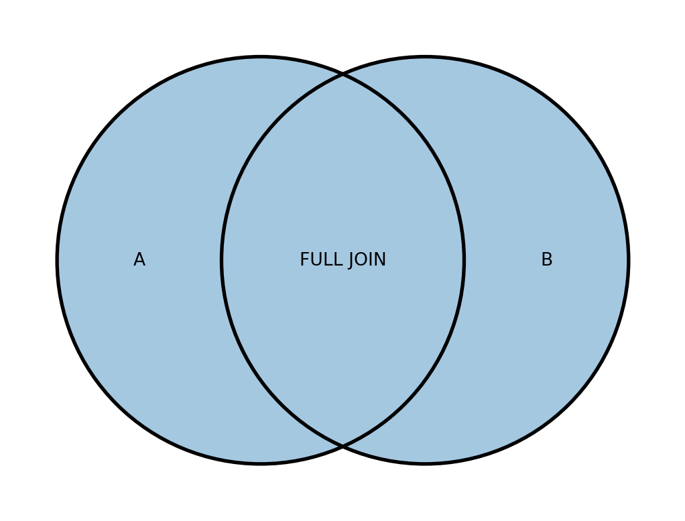
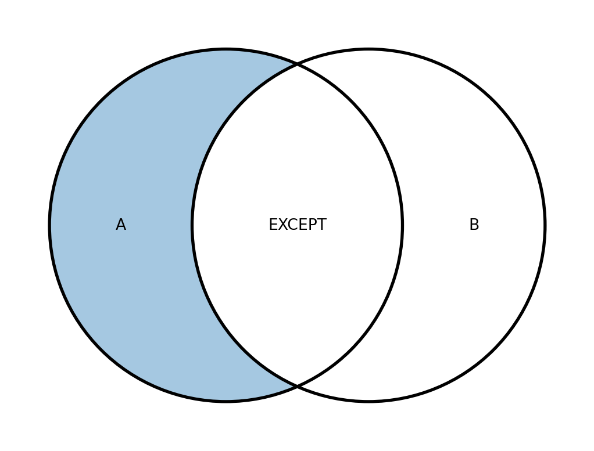
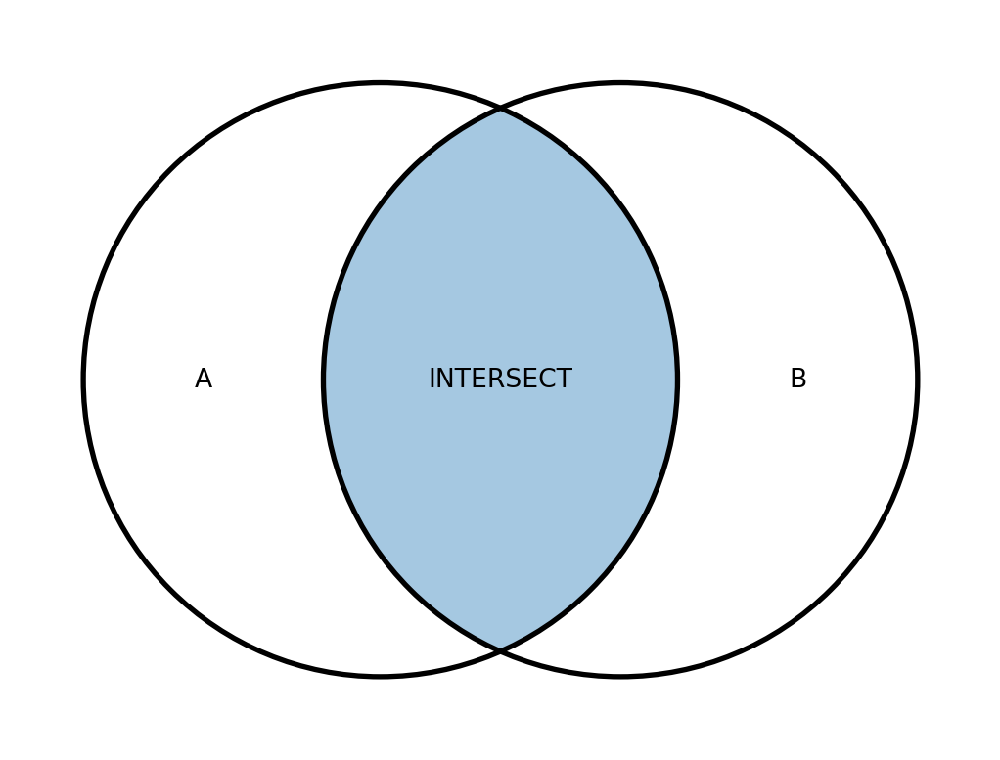
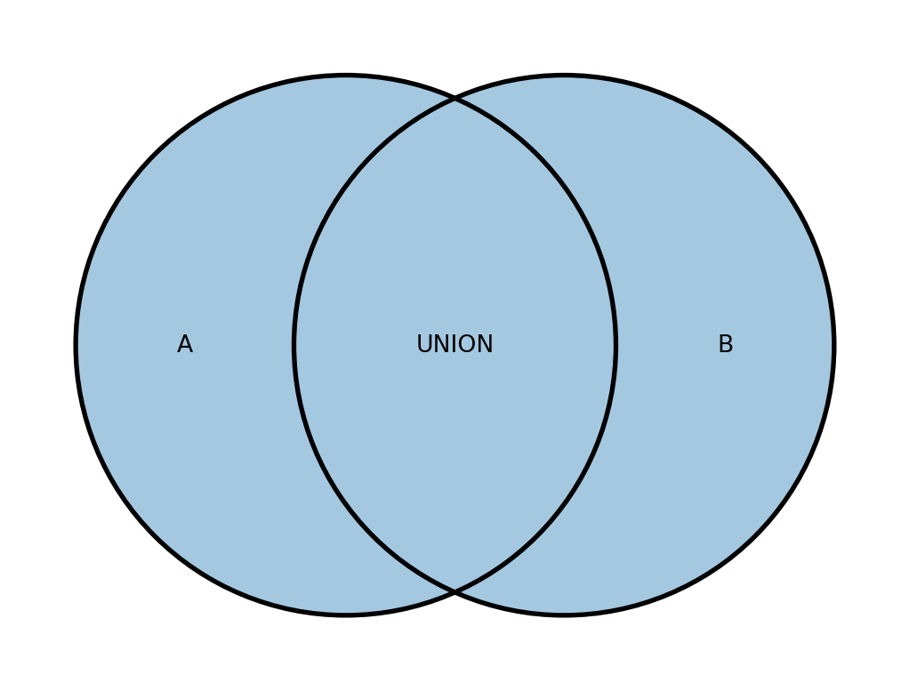

7 Об’єднання таблиць
7.1 Основні типи об’єднань JOIN
Ось ми й підібралися до однієї з найважливіших тем у SQL – об’єднання таблиць.
SQL-запити дозволяють вибирати та обробляти дані не тільки з однієї таблиці – у цьому ми вже переконалися, коли працювали з підзапитами. Але таблиці можна об’єднувати в один результуючий набір записів, пов’язуючи їх за певними умовами. Це дозволяє робити операція з’єднання JOIN.
Ми розглянемо такі типи з’єднань таблиць:
INNER JOINLEFT/RIGHT JOINFULL JOINCROSS JOIN
Оператори об’єднання включаються до розділу FROM запиту. Загалом, незалежно від того, який тип об’єднання використовується, запит на об’єднання таблиць виглядає наступним чином:
Як правило (але далеко не завжди), в якості умови [condition], за якою відбувається об’єднання, виступає рівність значень у певних стовпцях. Такі стовпці зазвичай використовуються як ключі із зазначенням id (товару, користувача тощо), тобто значень, за якими можна однозначно ідентифікувати певну сутність:
При цьому рекомендується до кожної колонка через точку вказувати ім’я таблиці, яка містить цю колонку. Більше того, це стає вже не рекомендацією, а необхідністю, коли імена стовпців у таблицях збігаються - без явного вказівки джерел, база даних не зможе сама визначити, які стовпці та з яких таблиць ви маєте на увазі, і в результаті поверне помилку.
Якщо імена таблиць надто довгі, таблицям можна присвоїти аліаси. За цими ж аліасами можна відразу зручно звертатися до колонок:
Якщо ім’я поля, за котрим відбувається об’єднання, збігається в обох таблицях (як у прикладах вище), можна використовувати скорочений запис з оператором USING:
При об’єднанні таблиць можна використовувати підзапити. Їх можна поєднувати з іншими таблицями або одину з одною:
7.2 Як працює об’єднання таблиць
Добре, із записом у загальному вигляді начебто зрозуміло. Але що насправді відбувається при об’єднанні таблиць? Давайте розбиратися.
Процес об’єднання можна подати у вигляді наступної послідовності операцій:
- Спочатку кожен рядок першої таблиці зіставляється з кожним рядком другої таблиці, тобто відбувається декартів добуток вдох множин, результатом якого є нове множина, що складається з різних пар вхідних рядків. Наприклад, якщо у одній таблиці було 50 записів, а інший 10, то результаті декартового добутку вийде 500 записів. На іграшковому прикладі це можна уявити так:

Потім для кожного об’єднаного рядка, що складається з двох вхідних таблиць, перевіряється умова з’єднання, вказана після оператора
ON.Після цього відповідно до обраного типу об’єднання формується результуюча таблиця.
При з’єднанні yне двох, а кількох таблиць, операція об’єднання виконується послідовно кілька разів, тобто описаний вище алгоритм запускається стільки разів, скільки зазначено з’єднань. При цьому в цій послідовності при кожному об’єднанні можна використовувати будь-який тип з’єднання (INNER, LEFT тощо).
Для двох об’єднань запит може виглядати приблизно так:
SELECT a.column_1, b.column_2
FROM table_1 a
LEFT JOIN table_2 b
ON a.user_id = b.user_id
JOIN table_3 c
ON b.order_id = c.order_id
...Про те, як саме вибір типу JOIN впливає на результат, ми говоритимемо далі.
Якщо щось на цьому кроці залишилося незрозумілим, не переживайте. Далі все прояснимо на практичних прикладах!
7.3 INNER JOIN
Перший тип об’єднання, який ми розглянемо, має назву INNER JOIN. Це оператор внутрішнього об’єднання, якому абсолютно неважливий порядок зазначення таблиць, тобто у таких випадках результат об’єднання буде однаковим:
SELECT ...
FROM table_1 INNER JOIN table_2
ON [condition]
...
SELECT ...
FROM table_2 INNER JOIN table_1
ON [condition]
...При цьому в запиті замість INNER JOIN можна писати просто JOIN - це те саме.
Результат об’єднання INNER JOIN формується так:
- Спочатку кожен рядок першої таблиці зіставляється з кожним рядком другої таблиці (відбувається декартів добуток).
- Потім для кожного об’єднаного рядка перевіряється умова з’єднання, вказана після оператора
ON. - Після цього всі об’єднані рядки, для яких умова виявилася істинною, додаються до результуючої таблиці.
Таким чином, в результаті об’єднання INNER JOIN із двох таблиць відкидаються усі рядки, які не пройшли перевірку на відповідність зазначеній умові. От і все!
Розглянемо наступний приклад:
SELECT A.id as id,
A.city as city,
B.country as country
FROM table_A as A
JOIN table_B as B
ON A.id = B.idВ результаті такого запиту таблиці table_A та table_B будуть об’єднані в таблицю table_С:
Таблиця 7.1: Приклад роботи INNER JOIN
| id | city |
|---|---|
| 01 | London |
| 02 | Kyiv |
| id | country |
|---|---|
| 02 | Ukraine |
| 03 | Poland |
| id | city | country |
|---|---|---|
| 02 | Kyiv | Ukraine |
Оскільки таблиці збігаються лише за одним значенням у стовпці id, то в результат буде включено лише одне запис.
Схематично результат роботи об’єднань прийнято зображувати за допомогою діаграм Венна. Для INNER JOIN наведено на рисунку 7.2.
Примітка
Докладніше про INNER JOIN можна почитати тут.
А тепер давайте повернемося до нашої бази даних та вирішимо завдання.
Для початку спробуйте виконати наступні два запити та порахувати кількість унікальних користувачів у таблицях users та user_actions:
Ви помітите, що у таблиці user_actions унікальних користувачів більше. Це означає, що про частину користувачів ми щось не знаємо — у нас просто немає інформації в таблиці users. Тому в результаті об’єднання цих двох таблиць за допомогою INNER JOIN цю частину користувачів буде виключено з результату.
Примітка
Зверніть увагу, що в результаті об’єднання колонки з ключами (у нашому випадку це user_id) не перетворюються на одну загальну колонку, а разом додаються в результуючу таблицю. Тобто скільки було сумарно колонок у двох таблицях, стільки виявиться і в результуючій таблиці після об’єднання. А вже далі в операторі SELECT можна вибирати потрібні та проводити над ними операції.
Щоб звернутися до колонок з однаковим ім’ям (user_id), що прийшли з різних таблиць, призначте таблицям аліаси та зверніться до колонок через них. Приклад, як це можна зробити:
Рішення
C:\Python\Python311\Lib\site-packages\sql\run.py:736: JupySQLDataFramePerformanceWarning:
It looks like you're using DuckDB with SQLAlchemy. For faster conversions, use a DuckDB native connection. Docs: https://jupysql.ploomber.io/en/latest/integrations/duckdb.html. to suppress this warning, see: https://jupysql.ploomber.io/en/latest/tutorials/duckdb-native-sqlalchemy.html#supress-warnings
| user_id_left | user_id_right | order_id | time | action | sex | birth_date | |
|---|---|---|---|---|---|---|---|
| 0 | 1 | 1 | 1 | 2022-08-24 01:52:00 | create_order | female | 1991-10-23 |
| 1 | 1 | 1 | 4683 | 2022-08-27 20:56:00 | create_order | female | 1991-10-23 |
| 2 | 1 | 1 | 22901 | 2022-09-02 00:58:00 | create_order | female | 1991-10-23 |
| 3 | 1 | 1 | 23149 | 2022-09-02 02:36:00 | create_order | female | 1991-10-23 |
| 4 | 2 | 2 | 2 | 2022-08-24 06:37:00 | create_order | female | 1993-06-18 |
| ... | ... | ... | ... | ... | ... | ... | ... |
| 59341 | 21399 | 21399 | 59583 | 2022-09-08 23:56:00 | create_order | female | 1987-04-27 |
| 59342 | 21399 | 21399 | 59587 | 2022-09-08 23:58:00 | create_order | female | 1987-04-27 |
| 59343 | 21400 | 21400 | 59586 | 2022-09-08 23:57:00 | create_order | male | 1986-12-31 |
| 59344 | 21401 | 21401 | 59589 | 2022-09-08 23:58:00 | create_order | female | 1993-03-20 |
| 59345 | 21402 | 21402 | 59591 | 2022-09-08 23:58:00 | create_order | female | 1991-05-24 |
59346 rows × 7 columns
Рішення
| users_count | |
|---|---|
| 0 | 20331 |
7.4 LEFT та RIGHT JOIN
Наступний тип об’єднання, який ми розглянемо, це LEFT OUTER JOIN (або просто LEFT JOIN).
LEFT JOIN— це оператор зовнішнього об’єднання, котрій важливий порядок таблиць у запиті, тобто на відміну від INNER JOIN, він не є симетричним.
Тому наступні два записи вже не є еквівалентними:
SELECT ...
FROM table_1 LEFT JOIN table_2
ON [condition]
...
SELECT ...
FROM table_2 LEFT JOIN table_1
ON [condition]
...Результат об’єднання LEFT JOIN формується так:
- Спочатку кожен рядок лівої таблиці зіставляється з кожним рядком правої таблиці (відбувається декартів добуток).
- Потім для кожного об’єднаного рядка перевіряється умова з’єднання, вказана після оператора
ON. - Після цього всі об’єднані рядки, для яких умова виявилася істинною, додаються до результуючої таблиці.
- Далі в результат додаються ті записи з лівої таблиці (увага: тільки з лівої), для яких умова виявилася хибною і які не увійшли до об’єднання на попередньому кроці. При цьому для таких записів відповідні поля правої таблиці заповнюються значеннями
NULL.
Якщо уважно подивитися на описаний алгоритм, можна зрозуміти, що він легко зводиться до наступної послідовності дій:
- Спочатку відповідно до зазначеної умови виконується
INNER JOINпершої та другої таблиць. - Потім до результату додаються ті записи з лівої таблиці (увага: тільки з лівої), для яких умова виявилася хибною і які не увійшли до об’єднання на попередньому кроці. При цьому для таких записів відповідні поля правої таблиці заповнюються значеннями
NULL.
Ось і вся магія!
Об’єднання RIGHT JOIN працює аналогічним чином, тільки на другому етапі результат INNER JOIN додаються записи не з лівої, а з правої таблиці.
Давайте знову розглянемо кілька простих прикладів.
Так буде виглядати запит та його результат із LEFT JOIN:
SELECT A.id as id,
A.city as city,
B.country as country
FROM table_A as A
LEFT JOIN table_B as B
ON A.id = B.idТаблиця 7.2: Приклад роботи LEFT JOIN
| id | city |
|---|---|
| 01 | London |
| 02 | Kyiv |
| id | country |
|---|---|
| 02 | Ukraine |
| 03 | Poland |
| id | city | country |
|---|---|---|
| 01 | London | NULL |
| 02 | Kyiv | Ukraine |
У цьому випадку до результату потрапить запис з id 2, оскільки вона є в обох таблицях, а також запис з id 1 з лівої таблиці.
Діаграма Венна для LEFT JOIN наведено на рис. 7.3.

А ось таким вийде результат запиту з RIGHT JOIN:
SELECT B.id as id,
A.city as city,
B.country as country
FROM table_A as A
RIGHT JOIN table_B as B
ON A.id = B.idТаблиця 7.3: Приклад роботи RIGHT JOIN
| id | city |
|---|---|
| 01 | London |
| 02 | Kyiv |
| id | country |
|---|---|
| 02 | Ukraine |
| 03 | Poland |
| id | city | country |
|---|---|---|
| 02 | Kyiv | Ukraine |
| 03 | NULL | Poland |
Все як і у випадку з LEFT JOIN, тільки в результат вже потрапить запис з id 3 з правої таблиці.
Діаграма Венна для RIGHT JOIN зображена на рис. 7.4

А тепер розглянемо на прикладі наших даних.
Рішення
C:\Python\Python311\Lib\site-packages\sql\run.py:736: JupySQLDataFramePerformanceWarning:
It looks like you're using DuckDB with SQLAlchemy. For faster conversions, use a DuckDB native connection. Docs: https://jupysql.ploomber.io/en/latest/integrations/duckdb.html. to suppress this warning, see: https://jupysql.ploomber.io/en/latest/tutorials/duckdb-native-sqlalchemy.html#supress-warnings
| user_id_left | user_id_right | order_id | time | action | sex | birth_date | |
|---|---|---|---|---|---|---|---|
| 0 | 1 | 1.0 | 1 | 2022-08-24 01:52:00 | create_order | female | 1991-10-23 |
| 1 | 1 | 1.0 | 4683 | 2022-08-27 20:56:00 | create_order | female | 1991-10-23 |
| 2 | 1 | 1.0 | 22901 | 2022-09-02 00:58:00 | create_order | female | 1991-10-23 |
| 3 | 1 | 1.0 | 23149 | 2022-09-02 02:36:00 | create_order | female | 1991-10-23 |
| 4 | 2 | 2.0 | 2 | 2022-08-24 06:37:00 | create_order | female | 1993-06-18 |
| ... | ... | ... | ... | ... | ... | ... | ... |
| 62569 | 21399 | 21399.0 | 59583 | 2022-09-08 23:56:00 | create_order | female | 1987-04-27 |
| 62570 | 21399 | 21399.0 | 59587 | 2022-09-08 23:58:00 | create_order | female | 1987-04-27 |
| 62571 | 21400 | 21400.0 | 59586 | 2022-09-08 23:57:00 | create_order | male | 1986-12-31 |
| 62572 | 21401 | 21401.0 | 59589 | 2022-09-08 23:58:00 | create_order | female | 1993-03-20 |
| 62573 | 21402 | 21402.0 | 59591 | 2022-09-08 23:58:00 | create_order | female | 1991-05-24 |
62574 rows × 7 columns
Рішення
| users_count | |
|---|---|
| 0 | 21401 |
Ви могли помітити, що при об’єднанні таблиць user_actions і users за допомогою LEFT JOIN у стовпцях, що прийшли з правої таблиці users, утворилися значення NULL. Якщо не помітили, спробуйте відсортувати об’єднану таблицю по полях users.user_id і users.birth_date.
Це саме те, про що ми говорили — при формуванні об’єднаних рядків для тих id з лівої таблиці, яких не було в правій таблиці, поля з правої таблиці були заповнені порожніми значеннями.
А тепер давайте перевернемо один трюк.
Рішення
C:\Python\Python311\Lib\site-packages\sql\run.py:736: JupySQLDataFramePerformanceWarning:
It looks like you're using DuckDB with SQLAlchemy. For faster conversions, use a DuckDB native connection. Docs: https://jupysql.ploomber.io/en/latest/integrations/duckdb.html. to suppress this warning, see: https://jupysql.ploomber.io/en/latest/tutorials/duckdb-native-sqlalchemy.html#supress-warnings
| user_id_left | user_id_right | order_id | time | action | sex | birth_date | |
|---|---|---|---|---|---|---|---|
| 0 | 1 | 1 | 1 | 2022-08-24 01:52:00 | create_order | female | 1991-10-23 |
| 1 | 1 | 1 | 4683 | 2022-08-27 20:56:00 | create_order | female | 1991-10-23 |
| 2 | 1 | 1 | 22901 | 2022-09-02 00:58:00 | create_order | female | 1991-10-23 |
| 3 | 1 | 1 | 23149 | 2022-09-02 02:36:00 | create_order | female | 1991-10-23 |
| 4 | 2 | 2 | 2 | 2022-08-24 06:37:00 | create_order | female | 1993-06-18 |
| ... | ... | ... | ... | ... | ... | ... | ... |
| 59341 | 21399 | 21399 | 59583 | 2022-09-08 23:56:00 | create_order | female | 1987-04-27 |
| 59342 | 21399 | 21399 | 59587 | 2022-09-08 23:58:00 | create_order | female | 1987-04-27 |
| 59343 | 21400 | 21400 | 59586 | 2022-09-08 23:57:00 | create_order | male | 1986-12-31 |
| 59344 | 21401 | 21401 | 59589 | 2022-09-08 23:58:00 | create_order | female | 1993-03-20 |
| 59345 | 21402 | 21402 | 59591 | 2022-09-08 23:58:00 | create_order | female | 1991-05-24 |
59346 rows × 7 columns
7.5 FULL JOIN
Щоб краще розібратися з джойнами, розглянемо ще один тип об’єднання таблиць — FULL OUTER JOIN або просто FULL JOIN. Це оператор повного зовнішнього об’єднання, для якого, як і INNER JOIN, неважливий порядок вказівки таблиць. Проте працює він зовсім інакше.
Запит із FULL OUTER JOIN виглядає приблизно так:
SELECT ...
FROM table_1 FULL JOIN table_2
ON [condition]
...
SELECT ...
FROM table_2 FULL JOIN table_1
ON [condition]
...Результат об’єднання FULL JOIN формується так:
- Спочатку кожен рядок лівої таблиці зіставляється з кожним рядком правої таблиці (відбувається декартів добуток).
- Потім для кожного об’єднаного рядка перевіряється умова об’єднання, вказана після оператора
ON. - Після цього всі об’єднані рядки, для яких умова виявилася істинною, додаються до результуючої таблиці.
- Далі в результат додаються ті записи з лівої та правої таблиць (увага: з обох таблиць), для яких умова виявилася хибною і які не увійшли до об’єднання на попередньому кроці. При цьому для таких записів відповідні поля з іншої таблиці (для лівої це поля з правої, для правої це поля з лівої) заповнюються значеннями
NULL.
Цей алгоритм можна звести до наступної послідовності дій:
- Спочатку відповідно до зазначеної умови виконується
INNER JOINлівої та правої таблиць. - Далі в результат додаються ті записи з лівої та правої таблиць (увага: з обох таблиць), для яких умова виявилася хибною і які не увійшли до об’єднання на попередньому кроці. При цьому для таких записів відповідні поля з іншої таблиці (для лівої це поля з правої, для правої це поля з лівої) заповнюються значеннями
NULL.
Розглянемо найпростіший приклад.
Так буде виглядати запит та його результат з FULL JOIN:
SELECT A.id as id,
A.city as city,
B.country as country
FROM table_A as A
FULL JOIN table_B as B
ON A.id = B.idТаблиця 7.4: Приклад роботи FULL JOIN
| id | city |
|---|---|
| 01 | London |
| 02 | Kyiv |
| id | country |
|---|---|
| 02 | Ukraine |
| 03 | Poland |
| id | city | country |
|---|---|---|
| 01 | London | NULL |
| 02 | Kyiv | Ukraine |
| 03 | NULL | Poland |
В результат потрапив спільний запис з id 2, а також всі записи, до яких не було знайдено відповідності з інших таблиць. Усі невідповідності були заповнені порожніми значеннями.
Діграма Венна для FULL JOIN наведено на рисунку 7.5.

А тепер розберемося з FULL JOIN на прикладі нашої бази даних.
У нас є дві таблиці з датами народження користувачів та кур’єрів – users та couriers. Можна припустити, що в кожній таблиці у колонці birth_date є якісь дати, яких немає в іншій таблиці. Тобто такі дати, в які народився хтось із кур’єрів, але не народився жоден користувач, і навпаки. Ну що ж, спробуємо перевірити цю гіпотезу.
Для початку згрупуємо дві таблиці по колонці birth_date і порахуємо скільки користувачів/кур’єрів народилися в кожен з днів. Для цього можете виконати такий запит:
%%sql
SELECT birth_date, COUNT(user_id) AS users_count
FROM users
WHERE birth_date IS NOT NULL
GROUP BY birth_dateC:\Python\Python311\Lib\site-packages\sql\run.py:736: JupySQLDataFramePerformanceWarning:
It looks like you're using DuckDB with SQLAlchemy. For faster conversions, use a DuckDB native connection. Docs: https://jupysql.ploomber.io/en/latest/integrations/duckdb.html. to suppress this warning, see: https://jupysql.ploomber.io/en/latest/tutorials/duckdb-native-sqlalchemy.html#supress-warnings
| birth_date | users_count | |
|---|---|---|
| 0 | 1991-05-24 | 11 |
| 1 | 1994-07-21 | 6 |
| 2 | 1992-01-09 | 13 |
| 3 | 1997-05-05 | 3 |
| 4 | 1990-08-16 | 5 |
| ... | ... | ... |
| 4471 | 1999-12-01 | 1 |
| 4472 | 1998-12-05 | 1 |
| 4473 | 1987-09-24 | 1 |
| 4474 | 1998-01-02 | 1 |
| 4475 | 1988-07-27 | 1 |
4476 rows × 2 columns
%%sql
SELECT birth_date, COUNT(courier_id) AS couriers_count
FROM couriers
WHERE birth_date IS NOT NULL
GROUP BY birth_dateC:\Python\Python311\Lib\site-packages\sql\run.py:736: JupySQLDataFramePerformanceWarning:
It looks like you're using DuckDB with SQLAlchemy. For faster conversions, use a DuckDB native connection. Docs: https://jupysql.ploomber.io/en/latest/integrations/duckdb.html. to suppress this warning, see: https://jupysql.ploomber.io/en/latest/tutorials/duckdb-native-sqlalchemy.html#supress-warnings
| birth_date | couriers_count | |
|---|---|---|
| 0 | 1981-06-11 | 1 |
| 1 | 1991-06-27 | 2 |
| 2 | 1994-05-04 | 2 |
| 3 | 1999-06-02 | 2 |
| 4 | 1998-12-22 | 2 |
| ... | ... | ... |
| 2169 | 1999-09-19 | 1 |
| 2170 | 1990-06-23 | 1 |
| 2171 | 1991-02-21 | 1 |
| 2172 | 1990-06-04 | 1 |
| 2173 | 1997-04-15 | 1 |
2174 rows × 2 columns
У результаті ви отримаєте дві таблиці з унікальними датами і кількістю людей, що народилися у кожен з днів. Давайте їх об’єднаємо.
Рішення
%%sql
WITH a AS (
SELECT birth_date, COUNT(user_id) AS users_count
FROM users
WHERE birth_date IS NOT NULL
GROUP BY birth_date
),
b AS (
SELECT birth_date, COUNT(courier_id) AS couriers_count
FROM couriers
WHERE birth_date IS NOT NULL
GROUP BY birth_date
)
SELECT
a.birth_date AS users_birth_date,
a.users_count,
b.birth_date AS couriers_birth_date,
b.couriers_count
FROM a
FULL JOIN b on a.birth_date = b.birth_date
ORDER BY users_birth_date, couriers_birth_dateC:\Python\Python311\Lib\site-packages\sql\run.py:736: JupySQLDataFramePerformanceWarning:
It looks like you're using DuckDB with SQLAlchemy. For faster conversions, use a DuckDB native connection. Docs: https://jupysql.ploomber.io/en/latest/integrations/duckdb.html. to suppress this warning, see: https://jupysql.ploomber.io/en/latest/tutorials/duckdb-native-sqlalchemy.html#supress-warnings
| users_birth_date | users_count | couriers_birth_date | couriers_count | |
|---|---|---|---|---|
| 0 | 1981-11-05 | 1.0 | None | NaN |
| 1 | 1982-04-05 | 1.0 | None | NaN |
| 2 | 1982-09-12 | 1.0 | None | NaN |
| 3 | 1983-01-06 | 1.0 | None | NaN |
| 4 | 1983-01-23 | 1.0 | None | NaN |
| ... | ... | ... | ... | ... |
| 4841 | None | NaN | 2005-09-13 | 1.0 |
| 4842 | None | NaN | 2005-10-28 | 1.0 |
| 4843 | None | NaN | 2006-08-01 | 1.0 |
| 4844 | None | NaN | 2007-08-09 | 1.0 |
| 4845 | None | NaN | 2007-12-10 | 1.0 |
4846 rows × 4 columns
7.6 Операції над множинами
Чудово. Запит із FULL JOIN ми начебто склали, але як нам тепер визначити, що кількість записів в отриманій таблиці збігається із загальним числом унікальних дат у двох таблицях — users та couriers? Адже саме стільки рядків ми й очікували отримати, правда?
Перевірити себе нам допоможуть операції з множинами. У мові SQL їх три:
UNIONEXCEPTINTERSECT
Вони дозволяють комбінувати результати кількох запитів один з одним та отримувати один загальний результат. Причому саме комбінувати, а не об’єднувати, як це роблять джойни.
Цю різницю важливо розуміти: в операціях з множинами не відбувається суміщення стовпців з двох таблиць - база даних просто відбирає рядки з таблиць, що задовольняють типу операції, і додає їх до загального результату.
Операції над множинами мають наступний синтаксис:
SELECT column_1, column_2
FROM table_1
UNION
SELECT column_1, column_2
FROM table_2
SELECT column_1, column_2
FROM table_1
EXCEPT
SELECT column_1, column_2
FROM table_2
SELECT column_1, column_2
FROM table_1
INTERSECT
SELECT column_1, column_2
FROM table_2- Операція
EXCEPTповертає всі записи, які є у першому запиті, але відсутні у другому (різниця множин). - Операція
INTERSECTповертає всі записи, які є і в першому, і в другому запиті (перетин множин). - Операція
UNIONпоєднує записи із двох запитів в один загальний результат (об’єднання множин).
При цьому за замовчанням ці операції виключають із результату рядки-дублікати. Щоб дублікати не виключалися із результату, необхідно після імені операції вказати ключове слово ALL. Наприклад, так:
Діаграми Венна для операцій над множинами виглядають зображено на рисунку 7.6.



Для роботи цих операцій необхідно, щоб виконувались такі умови:
- У кожному запиті
SELECTмає бути однакова кількість стовпців. - Типи даних у стовпцях мають бути сумісні.
При цьому кількість стовпців в операторі SELECT може бути будь-якою — головне, щоб вона була однаковою.
Наприклад, наступний запит поверне унікальні ID користувачів, які щось замовляли в нашому сервісі, але яких з якоїсь причини немає в таблиці users:
C:\Python\Python311\Lib\site-packages\sql\run.py:736: JupySQLDataFramePerformanceWarning:
It looks like you're using DuckDB with SQLAlchemy. For faster conversions, use a DuckDB native connection. Docs: https://jupysql.ploomber.io/en/latest/integrations/duckdb.html. to suppress this warning, see: https://jupysql.ploomber.io/en/latest/tutorials/duckdb-native-sqlalchemy.html#supress-warnings
| user_id | |
|---|---|
| 0 | 54 |
| 1 | 86 |
| 2 | 103 |
| 3 | 116 |
| 4 | 120 |
| ... | ... |
| 1065 | 18352 |
| 1066 | 12713 |
| 1067 | 18246 |
| 1068 | 18015 |
| 1069 | 20398 |
1070 rows × 1 columns
Примітка
Докладніше про операції над множинами можна прочитати у документації DuckDB.
Про теорію множин можна почитати у статті на Вікіпедії.
Рішення
| dates_count | |
|---|---|
| 0 | 4846 |
7.7 CROSS JOIN
Насправді CROSS JOIN - це просто декартів добуток двох таблиць, тобто саме те, що відбувається на першому етапі решти джойнів. Важлива відмінність у синтаксисі CROSS JOIN полягає в тому, що для нього не потрібно вказувати умову для об’єднання:
Той самий результат можна отримати за допомогою наступного запису:
Розглянемо простий приклад:
За допомогою CROSS JOIN ми отримуємо всі можливі комбінації значень із першої та другої таблиці:
Таблиця 7.5: Приклад роботи FULL JOIN
| city |
|---|
| London |
| Kyiv |
| country |
|---|
| UK |
| Ukraine |
| Poland |
| city | country |
|---|---|
| London | UK |
| London | Ukraine |
| London | Poland |
| Kyiv | UK |
| Kyiv | Ukraine |
| Kyiv | Poland |
А теперь давайте решим простую задачу.
Рішення
C:\Python\Python311\Lib\site-packages\sql\run.py:736: JupySQLDataFramePerformanceWarning:
It looks like you're using DuckDB with SQLAlchemy. For faster conversions, use a DuckDB native connection. Docs: https://jupysql.ploomber.io/en/latest/integrations/duckdb.html. to suppress this warning, see: https://jupysql.ploomber.io/en/latest/tutorials/duckdb-native-sqlalchemy.html#supress-warnings
| user_id | name | |
|---|---|---|
| 0 | 185 | apple juice |
| 1 | 185 | apples |
| 2 | 185 | bagels |
| 3 | 185 | bananas |
| 4 | 185 | beef |
| ... | ... | ... |
| 8695 | 21402 | waffles |
| 8696 | 21402 | watermelon |
| 8697 | 21402 | white chocolate |
| 8698 | 21402 | yogurt |
| 8699 | 21402 | сowberry juice |
8700 rows × 2 columns
Здається, ми розглянули достатньо прикладів об’єднання таблиць. Час переходити до практики!
Проведемо невелику аналітику нашого сервісу і порахуємо, скільки в середньому товарів замовляє кожен користувач.
Завдання може звучати досить абстрактно мовою бізнесу, але не переживайте! Вирішуватимемо її поетапно, поступово перекладаючи її на мову SQL.
Рішення
C:\Python\Python311\Lib\site-packages\sql\run.py:736: JupySQLDataFramePerformanceWarning:
It looks like you're using DuckDB with SQLAlchemy. For faster conversions, use a DuckDB native connection. Docs: https://jupysql.ploomber.io/en/latest/integrations/duckdb.html. to suppress this warning, see: https://jupysql.ploomber.io/en/latest/tutorials/duckdb-native-sqlalchemy.html#supress-warnings
| user_id | order_id | product_ids | |
|---|---|---|---|
| 0 | 1 | 1 | [65, 28] |
| 1 | 1 | 4683 | [1, 15, 40] |
| 2 | 1 | 22901 | [65, 72, 83] |
| 3 | 1 | 23149 | [6, 84, 32] |
| 4 | 2 | 2 | [35, 30, 42, 34] |
| ... | ... | ... | ... |
| 995 | 227 | 12572 | [76, 47, 37, 31] |
| 996 | 227 | 12578 | [58] |
| 997 | 227 | 23268 | [74, 25, 67] |
| 998 | 227 | 25873 | [74, 72, 46] |
| 999 | 227 | 25885 | [40, 58, 83] |
1000 rows × 3 columns
Тепер трохи уточнимо наш запит, оскільки нас цікавлять не всі замовлення з таблиці user_actions, а лише ті, які не були скасовані користувачами, причому унікальні.
Рішення
C:\Python\Python311\Lib\site-packages\sql\run.py:736: JupySQLDataFramePerformanceWarning:
It looks like you're using DuckDB with SQLAlchemy. For faster conversions, use a DuckDB native connection. Docs: https://jupysql.ploomber.io/en/latest/integrations/duckdb.html. to suppress this warning, see: https://jupysql.ploomber.io/en/latest/tutorials/duckdb-native-sqlalchemy.html#supress-warnings
| user_id | order_id | product_ids | |
|---|---|---|---|
| 0 | 1 | 1 | [65, 28] |
| 1 | 1 | 4683 | [1, 15, 40] |
| 2 | 1 | 22901 | [65, 72, 83] |
| 3 | 1 | 23149 | [6, 84, 32] |
| 4 | 2 | 2 | [35, 30, 42, 34] |
| ... | ... | ... | ... |
| 995 | 248 | 13935 | [75, 28, 86] |
| 996 | 248 | 15518 | [67, 79, 63] |
| 997 | 249 | 287 | [26, 74, 53, 23] |
| 998 | 249 | 758 | [45, 57, 78] |
| 999 | 249 | 7347 | [30, 14, 6, 9] |
1000 rows × 3 columns
Здається, все готове для того, щоб для кожного користувача порахувати середню кількість товарів у замовленні.
Рішення
%%sql
with user_order_prod as (
SELECT user_id,
order_id,
product_ids
FROM user_actions
LEFT JOIN orders using (order_id)
WHERE order_id in (SELECT order_id
FROM courier_actions
WHERE action = 'deliver_order')
)
SELECT user_id,
ROUND(AVG(array_length(product_ids, 1)), 2) as avg_order_size
FROM user_order_prod
GROUP BY user_id
ORDER BY user_id
LIMIT 1000
-- або
-- SELECT user_id,
-- round(avg(array_length(product_ids, 1)), 2) as avg_order_size
-- FROM (SELECT user_id,
-- order_id
-- FROM user_actions
-- WHERE order_id not in (SELECT order_id
-- FROM user_actions
-- WHERE action = 'cancel_order')) t1
-- LEFT JOIN orders using(order_id)
-- GROUP BY user_id
-- ORDER BY user_id limit 1000C:\Python\Python311\Lib\site-packages\sql\run.py:736: JupySQLDataFramePerformanceWarning:
It looks like you're using DuckDB with SQLAlchemy. For faster conversions, use a DuckDB native connection. Docs: https://jupysql.ploomber.io/en/latest/integrations/duckdb.html. to suppress this warning, see: https://jupysql.ploomber.io/en/latest/tutorials/duckdb-native-sqlalchemy.html#supress-warnings
| user_id | avg_order_size | |
|---|---|---|
| 0 | 1 | 2.75 |
| 1 | 2 | 4.00 |
| 2 | 3 | 4.00 |
| 3 | 4 | 3.00 |
| 4 | 5 | 1.00 |
| ... | ... | ... |
| 995 | 1001 | 2.71 |
| 996 | 1002 | 2.67 |
| 997 | 1003 | 3.00 |
| 998 | 1004 | 3.40 |
| 999 | 1005 | 2.00 |
1000 rows × 2 columns
А що якби ми захотіли зробити докладнішу аналітику і, наприклад, порахувати середню вартість замовлення (середній чек) кожного клієнта? Для цього нам би знадобилася інформація про вартість кожного окремого замовлення. Давайте проведемо такі розрахунки.
Рішення
C:\Python\Python311\Lib\site-packages\sql\run.py:736: JupySQLDataFramePerformanceWarning:
It looks like you're using DuckDB with SQLAlchemy. For faster conversions, use a DuckDB native connection. Docs: https://jupysql.ploomber.io/en/latest/integrations/duckdb.html. to suppress this warning, see: https://jupysql.ploomber.io/en/latest/tutorials/duckdb-native-sqlalchemy.html#supress-warnings
| order_id | product_id | price | |
|---|---|---|---|
| 0 | 1 | 28 | 75.0 |
| 1 | 1 | 65 | 100.0 |
| 2 | 2 | 30 | 140.0 |
| 3 | 2 | 34 | 98.0 |
| 4 | 2 | 35 | 90.0 |
| ... | ... | ... | ... |
| 995 | 299 | 83 | 55.0 |
| 996 | 299 | 87 | 398.0 |
| 997 | 300 | 57 | 450.0 |
| 998 | 300 | 67 | 30.0 |
| 999 | 301 | 1 | 150.0 |
1000 rows × 3 columns
Маючи таблицю із замовленнями, що містить список товарів та їх ціни, тепер можна легко порахувати вартість кожного замовлення.
Рішення
%%sql
SELECT order_id,
sum(price) as order_price
FROM (SELECT order_id,
product_ids,
unnest(product_ids) as product_id
FROM orders) t1
LEFT JOIN products using(product_id)
GROUP BY order_id
ORDER BY order_id limit 1000
-- або
-- with unnest_id as (
-- SELECT order_id,
-- unnest(orders.product_ids) as product_id
-- FROM orders
-- ),
-- price_tbl as (
-- SELECT order_id,
-- product_id,
-- products.price
-- FROM unnest_id
-- LEFT JOIN products using (product_id)
-- )
-- SELECT order_id,
-- sum(price) as order_price
-- FROM price_tbl
-- GROUP BY order_id
-- ORDER BY order_id
-- LIMIT 1000C:\Python\Python311\Lib\site-packages\sql\run.py:736: JupySQLDataFramePerformanceWarning:
It looks like you're using DuckDB with SQLAlchemy. For faster conversions, use a DuckDB native connection. Docs: https://jupysql.ploomber.io/en/latest/integrations/duckdb.html. to suppress this warning, see: https://jupysql.ploomber.io/en/latest/tutorials/duckdb-native-sqlalchemy.html#supress-warnings
| order_id | order_price | |
|---|---|---|
| 0 | 1 | 175.0 |
| 1 | 2 | 394.0 |
| 2 | 3 | 493.0 |
| 3 | 4 | 156.0 |
| 4 | 5 | 51.0 |
| ... | ... | ... |
| 995 | 996 | 295.0 |
| 996 | 997 | 150.0 |
| 997 | 998 | 358.0 |
| 998 | 999 | 289.0 |
| 999 | 1000 | 69.0 |
1000 rows × 2 columns
Ось тепер у нас є все необхідне, щоб зробити наш перший серйозний аналітичний запит і порахувати різні метрики користувача!
Давайте об’єднаємо в один запит дані про кількість товарів на замовлення наших користувачів з інформацією про вартість кожного замовлення, а потім розрахуємо кілька корисних показників.
Рішення
%%sql
with unnest_id as (
SELECT order_id,
unnest(orders.product_ids) as product_id
FROM orders
),
price_tbl as (
SELECT order_id,
product_id,
products.price
FROM unnest_id
LEFT JOIN products using (product_id)
),
user_order_prod as (
SELECT user_id,
order_id,
product_ids
FROM user_actions
LEFT JOIN orders using (order_id)
WHERE order_id in (
SELECT order_id
FROM courier_actions
WHERE action = 'deliver_order')
),
order_size as (
SELECT user_id,
order_id,
round(avg(array_length(product_ids, 1)), 2) as avg_order_size
FROM user_order_prod
GROUP BY user_id, order_id
),
order_price as (
SELECT order_id,
sum(price) as order_price
FROM price_tbl
GROUP BY order_id
)
SELECT user_id,
COUNT(user_id) as orders_count,
ROUND(AVG(avg_order_size), 2) as avg_order_size,
SUM(order_price) as sum_order_value,
ROUND(AVG(order_price), 2) as avg_order_value,
MIN(order_price) as min_order_value,
MAX(order_price) as max_order_value
FROM order_size
LEFT JOIN order_price using (order_id)
GROUP BY user_id
ORDER BY user_id
LIMIT 1000C:\Python\Python311\Lib\site-packages\sql\run.py:736: JupySQLDataFramePerformanceWarning:
It looks like you're using DuckDB with SQLAlchemy. For faster conversions, use a DuckDB native connection. Docs: https://jupysql.ploomber.io/en/latest/integrations/duckdb.html. to suppress this warning, see: https://jupysql.ploomber.io/en/latest/tutorials/duckdb-native-sqlalchemy.html#supress-warnings
| user_id | orders_count | avg_order_size | sum_order_value | avg_order_value | min_order_value | max_order_value | |
|---|---|---|---|---|---|---|---|
| 0 | 1 | 4 | 2.75 | 1206.0 | 301.50 | 170.0 | 640.0 |
| 1 | 2 | 2 | 4.00 | 590.0 | 295.00 | 196.0 | 394.0 |
| 2 | 3 | 4 | 4.00 | 2154.0 | 538.50 | 336.0 | 772.0 |
| 3 | 4 | 2 | 3.00 | 329.0 | 164.50 | 156.0 | 173.0 |
| 4 | 5 | 1 | 1.00 | 51.0 | 51.00 | 51.0 | 51.0 |
| ... | ... | ... | ... | ... | ... | ... | ... |
| 995 | 1001 | 7 | 2.71 | 2376.0 | 339.43 | 60.0 | 596.0 |
| 996 | 1002 | 3 | 2.67 | 1365.0 | 455.00 | 75.0 | 665.0 |
| 997 | 1003 | 1 | 3.00 | 200.0 | 200.00 | 200.0 | 200.0 |
| 998 | 1004 | 5 | 3.40 | 1906.0 | 381.20 | 245.0 | 498.0 |
| 999 | 1005 | 1 | 2.00 | 94.0 | 94.00 | 94.0 | 94.0 |
1000 rows × 7 columns
З великим завданням ми впоралися – тепер давайте вирішимо кілька додаткових завдань на закріплення нових знань.
Рішення
%%sql
SELECT name,
count(product_id) as times_purchased
FROM (SELECT order_id,
product_id,
name
FROM (SELECT DISTINCT order_id,
unnest(product_ids) as product_id
FROM orders
LEFT JOIN courier_actions using (order_id)
WHERE action = 'deliver_order'
and date_part('month', time) = 9
and date_part('year', time) = 2022) t1
LEFT JOIN products using (product_id)) t2
GROUP BY name
ORDER BY times_purchased desc limit 10| name | times_purchased | |
|---|---|---|
| 0 | bananas | 2632 |
| 1 | pasta | 2623 |
| 2 | long loaf | 2622 |
| 3 | sugar | 2617 |
| 4 | bread | 2605 |
| 5 | chicken | 2585 |
| 6 | black tea bags | 2581 |
| 7 | milk | 2564 |
| 8 | instant coffee | 2460 |
| 9 | apple juice | 2373 |
Раніше ми вважали рахували скасованих замовлень (cancel_rate) для кожного користувача. Тепер у нашому розпорядженні є всі необхідні знання, щоб порахувати цей показник у розрізі статі.
Рішення
%%sql
SELECT coalesce(sex, 'unknown') as sex,
round(avg(cancel_rate), 3) as avg_cancel_rate
FROM (SELECT user_id,
sex,
count(distinct order_id) filter (WHERE action = 'cancel_order')::decimal / count(distinct order_id) as cancel_rate
FROM user_actions
LEFT JOIN users using(user_id)
GROUP BY user_id, sex
ORDER BY cancel_rate desc) t
GROUP BY sex
ORDER BY sex| sex | avg_cancel_rate | |
|---|---|---|
| 0 | female | 0.051 |
| 1 | male | 0.048 |
| 2 | unknown | 0.046 |
Рішення
%%sql
SELECT order_id
FROM (SELECT order_id,
time - creation_time as time_to_deliv
FROM orders
LEFT JOIN courier_actions using (order_id)
WHERE action = 'deliver_order'
ORDER BY time_to_deliv desc) as t1 limit 10
-- або
-- SELECT order_id
-- FROM (SELECT order_id,
-- time - creation_time as time_to_deliv
-- FROM orders
-- LEFT JOIN courier_actions using (order_id)
-- WHERE action = 'deliver_order'
-- ORDER BY time_to_deliv desc) as t1 limit 10| order_id | |
|---|---|
| 0 | 22408 |
| 1 | 58491 |
| 2 | 1155 |
| 3 | 1464 |
| 4 | 4788 |
| 5 | 11064 |
| 6 | 12150 |
| 7 | 14647 |
| 8 | 18991 |
| 9 | 22907 |
7.8 Збираємо списки: array_agg()
Днями менеджер знову звернувся до вас із завданням: попросив зробити вивантаження з таблиці orders з усіма замовленнями та їх вмістом. З листування ви так і не зрозуміли, навіщо всі ці дані, але завдання зробили: натиснули SELECT * і відправили йому excel-файл із замовленнями. Наступного ранку з’ясувалося, що такі дані його не влаштовують, оскільки він не розуміє, що це за списки з наборами чисел. Справді, цей момент ви не врахували. Давайте виправлятися!
array_agg — це просунута агрегатна функція, яка збирає всі значення в зазначеному стовпці в єдиний список (ARRAY). По суті array_agg - це операція, зворотна unnest, її синтаксис нічим не відрізняється від синтаксису інших агрегатних функцій:
Перед тим, як вирішувати завдання, спробуйте спочатку виконати просту вправу: розгорніть списки з id товарів, помістіть результат у підзапит, а потім відразу ж поверніть все назад у списки за допомогою array_agg. Алгоритм вирішення цього завдання приблизно такий самий.
Рішення
C:\Python\Python311\Lib\site-packages\sql\run.py:736: JupySQLDataFramePerformanceWarning:
It looks like you're using DuckDB with SQLAlchemy. For faster conversions, use a DuckDB native connection. Docs: https://jupysql.ploomber.io/en/latest/integrations/duckdb.html. to suppress this warning, see: https://jupysql.ploomber.io/en/latest/tutorials/duckdb-native-sqlalchemy.html#supress-warnings
| order_id | product_names | |
|---|---|---|
| 0 | 11 | [tangerines, mayonnaise, pork] |
| 1 | 16 | [apples, waffles, cookie] |
| 2 | 26 | [salted fish, mutton, pears, black leaf tea] |
| 3 | 55 | [bread, sour cream, kvass] |
| 4 | 67 | [milk, black leaf tea, lollipops] |
| ... | ... | ... |
| 995 | 18270 | [bread, cookie, chicken] |
| 996 | 18311 | [multifruit juice, salt, lemonade] |
| 997 | 18324 | [black leaf tea, peas] |
| 998 | 18335 | [ivan-tea in bags, waffles, salt] |
| 999 | 18340 | [instant coffee, still water] |
1000 rows × 2 columns
Рішення
%%sql
with order_id_large_size as (SELECT order_id
FROM orders
WHERE array_length(product_ids, 1) = (SELECT max(array_length(product_ids, 1))
FROM orders))
SELECT DISTINCT order_id,
user_id,
date_part('year', age((SELECT max(time)
FROM user_actions), users.birth_date))::integer as user_age, courier_id, date_part('year', age((SELECT max(time)
FROM user_actions), couriers.birth_date))::integer as courier_age
FROM (SELECT order_id,
user_id
FROM user_actions
WHERE order_id in (SELECT *
FROM order_id_large_size)) t1
LEFT JOIN (SELECT order_id,
courier_id
FROM courier_actions
WHERE order_id in (SELECT *
FROM order_id_large_size)) t2 using(order_id)
LEFT JOIN users using(user_id)
LEFT JOIN couriers using(courier_id)
ORDER BY order_id| order_id | user_id | user_age | courier_id | courier_age | |
|---|---|---|---|---|---|
| 0 | 7949 | 3804 | 29 | 845 | 19 |
| 1 | 18853 | 5433 | 31 | 1537 | 33 |
| 2 | 29786 | 12728 | 33 | 431 | 26 |
| 3 | 49755 | 18622 | 29 | 1619 | 32 |
| 4 | 51414 | 17170 | 31 | 2564 | 27 |
7.9 SELF JOIN
І насамкінець розглянемо ще один тип об’єднання таблиць, який теж потрібно знати. Це так званий SELF JOIN.
SELF JOIN - не що інше, як об’єднання таблиці із самою собою. Так, така операція також можлива і, більше того, часто буває корисною.
Приєднати таблицю до себе можна з допомогою будь-якого розглянутого раніше типу джойна:
SELECT ...
FROM table JOIN table
ON [condition]
SELECT ...
FROM table LEFT JOIN table
ON [condition]
SELECT ...
FROM table FULL JOIN table
ON [condition]
SELECT ...
FROM table CROSS JOIN tableРішення
%%sql
with main_table as (SELECT DISTINCT order_id,
product_id,
name
FROM (SELECT order_id,
unnest(product_ids) as product_id
FROM orders
WHERE order_id not in (SELECT order_id
FROM user_actions
WHERE action = 'cancel_order')
and order_id in (SELECT order_id
FROM user_actions
WHERE action = 'create_order')) t join products using(product_id)
ORDER BY order_id, name)
SELECT pair,
count(order_id) as count_pair
FROM (SELECT DISTINCT a.order_id,
case when a.name > b.name then string_to_array(concat(b.name, '+', a.name), '+')
else string_to_array(concat(a.name, '+', b.name), '+') end as pair
FROM main_table a join main_table b
ON a.order_id = b.order_id and
a.name != b.name) t
GROUP BY pair
ORDER BY count_pair desc, pair
-- або
-- with
-- t as (select order_id,
-- unnest(product_ids) as product_id from orders
-- left join user_actions using(order_id)
-- where order_id NOT IN (SELECT order_id FROM user_actions WHERE action = 'cancel_order')
-- ),
-- k as (select order_id, t.product_id as pr, t1.product_id as pr1
-- from t
-- join t as t1 using(order_id)
-- where t.product_id != t1.product_id),
--
-- p as (select order_id, pr, pr1, name
-- from k
-- left join products on pr = products.product_id),
--
-- s as (select order_id, p.name as name, products.name as name1
-- from p
-- left join products on pr1 = products.product_id),
--
-- l as (select distinct
-- order_id,
-- array_sort(array_cat(array[name], array[name1])) as pair
-- from s)
-- select pair, count(*) as count_pair from l
-- group by pair
-- order by count_pair desc, pair C:\Python\Python311\Lib\site-packages\sql\run.py:736: JupySQLDataFramePerformanceWarning:
It looks like you're using DuckDB with SQLAlchemy. For faster conversions, use a DuckDB native connection. Docs: https://jupysql.ploomber.io/en/latest/integrations/duckdb.html. to suppress this warning, see: https://jupysql.ploomber.io/en/latest/tutorials/duckdb-native-sqlalchemy.html#supress-warnings
| pair | count_pair | |
|---|---|---|
| 0 | [bread, chicken] | 249 |
| 1 | [bread, sugar] | 237 |
| 2 | [black tea bags, coffee 3 in 1] | 235 |
| 3 | [bread, long loaf] | 235 |
| 4 | [chicken, sugar] | 233 |
| ... | ... | ... |
| 3735 | [honey, sesame oil] | 2 |
| 3736 | [jam, salted fish] | 2 |
| 3737 | [linseed oil, sesame oil] | 2 |
| 3738 | [sesame oil, sprats] | 2 |
| 3739 | [dried fruits, tea mushroom] | 1 |
3740 rows × 2 columns